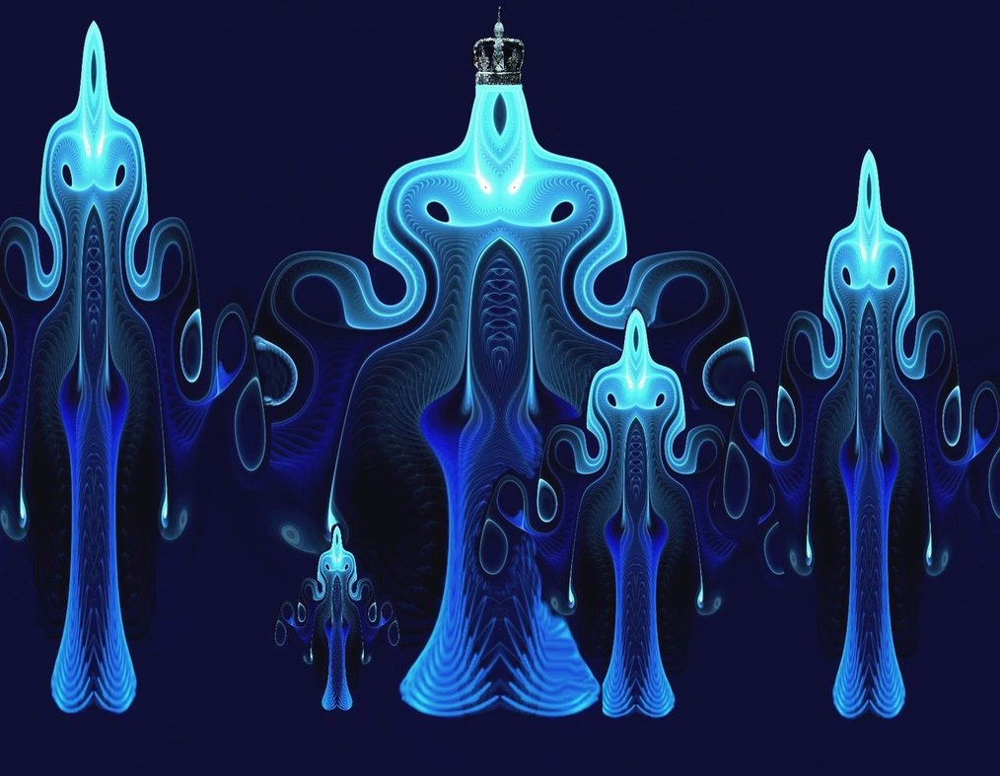

20 Единение
- Когда ты придешь в наш мир, будет праздник Единения, - однажды сказали мне.
От этих слов я ощутила неимоверное счастье, словно почувствовала, что речь шла о чем-то светлом и удивительном.
Я вспомнила разговор мужчиной, с которым я раньше встречалась.
- У нас все хорошо. Но мне кое-чего не хватает, - говорю, - жаль, что у нас с тобой нет ментального единения. Как бы я хотела быть с тобой еще ближе, на уровне мыслей, чувствовать и слышать, о чем ты думаешь.
- Мы и так очень близки, я тебя люблю. Но я не хотел бы пускать в свою приватную зону.
Меня всегда удручало, когда я видела, что люди создают семьи без глубокого взаимопонимания. Я не желала такую семью. Рядом со мной был очень хороший человек, но мы не были близки душевно.
А теперь... неужели моя мечта исполнится?
Единение... Когда все друг другу больше, чем братья. Не могу сказать, что я верила - я уже ничему не верила, но я ходила как загипнотизированная, словно уже предощущала это Единение.
Недели две назад мне сказали странную фразу: на Единении вампиры пьют кровь друг друга и, что самое удивительное, это приятно обеим сторонам. В этом нет ничего порочного и неприличного - напротив: в этом заповедном мире, куда я так стремилась попасть, все было совсем иначе. Я чувствовала себя, словно Алиса в зазеркалье.
Пусть они - вампиры, кто угодно, но на Единении можно увидеть их внутреннюю сторону, их душу, а там все иначе.. внутри они очень теплые, добрые, любящие существа.
Позже я осознала, что никто в буквальном смысле ничью кровь не пьет: имелись в виду более тонкие вещи - материя и информация, связанные через меру - мерность миров. Мысли для них - кровь иной мерности. По сути данный процесс собой представлял единение душ, обмен мыслеформами. Ведь каждому приятно чувствовать душевную и духовную близость с другими существами. Приятно, когда его слушают, когда он не безразличен - это и был тот самый процесс "укуса" в иной мерности.
В одну из ночей мне рассказали про Единение. Я полностью окунулась в это невероятное чувство. Видела их трехмерные мыслеобразы, в которые вплетались и мои мысли, которые тоже затем долетали до меня словно издалека. Как будто я даже себя слышала со стороны. Но их слова звучали как гипноз, и это было потрясающе, это затягивало.
- Мы едины, полностью едины.. мы с тобой, мы вместе.. мы тебя любим. Так происходит наше Единение. Мы всегда будем вместе, полностью едины.. навсегда едины...
Я ощущала невероятную радость, влюбленность, близость с теми существами, о которых я ничего не знаю. В тот момент я была по-настоящему счастлива.
Когда все завершилось, мне сказали, что это и было Единение. Мы объединились на уровне мыслей и чувств.
И все же, я напомнила:
- Но ведь вы мне обещали, что Единение произойдет после того того, как я окажусь в вашем мире! И снова вы меня обманули!
- Скажи честно, если бы мы тебе описали заранее, как проходит Единение, ты бы согласилась? Скорей всего, ты бы начала бы искать подвох. Хотя, ты уже заметила, что это бесполезно.
- Верно. Мне сложно переиграть гроссмейстера, который, похоже, знает лучше чем я, о чём я думаю и незаметно подменяет мои мысли.
- В любом случае, ты бы испугалась, что мы хотим заполучить полный ментальный контроль. Как ты любишь говорить - сначала покажите мне вашу планету, докажите, что не обманываете, а потом будем решать. Разве не так?
Я кивнула. Мне нечего было возразить.
- После полного перехода в наш мир мы проведем Единение на всех уровнях - и на физическом уровне тоже. Для нас нет ложных запретов и предубеждений, поскольку все абсолютно чисто. Мы искренне любим друг друга, даем тепло и радость.
Мне было просто хорошо в тот момент и я не стала спорить - все равно они управляют процессом.
Внутри меня появилась лихорадочная мыслеформа, которой я не позволила оформиться в слова. Тихо, стоп.. вдруг услышат.. что они обо мне подумают? Они ведь имеют в виду что-то совсем другое, эти существа иного мира, а не то, что мне представилось. Эдик, чёрт его подери! Это он мне сказал, что у них в биологическом плане близкие отношения проходят еще ярче, чем у людей. И откуда он всё знает, хотя клялся и божился, что не участвовал. Главное об этом не думать, выкинуть из головы... Это недопустимо! Но почему? Разве в этом есть что-то ужасное, вредное для здоровья? Так, цыц! Все, тихо, пока никакие телепаты не услышали!
В следующие ночи иногда я их просила снова дать мне возможность ощутить Единение. Мне это помогало справиться с перегрузками и в какой-то момент стало для меня почти что религией. На Единении, когда посылали мне абстрактные цветные мыслеобразы их мира, говорили:
- У нас есть наш мир.. это главное, что у нас есть.. наша религия, наше счастье, наша тайна, наша любовь... Ты - одна из нас. Ты - НАША.
Их разговоры завораживали. В эти моменты они становились мне чрезвычайно близкими существами, я чувствовала их рядом. Я уже не представляла, как могла раньше без них жить. Как смогу жить дальше, если они исчезнут? С ними я обрела то, что искала всю жизнь - лекарство от одиночества. Как же правы они были в лесу - я не хочу быть одиночкой. Мне нужны они - те, которые меня любят и которые будут со мной всегда.
